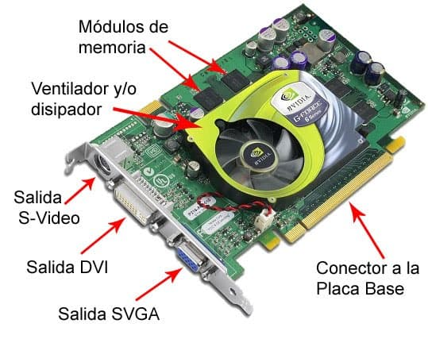

Una tarjeta de video es un componente de la computadora encargado de crear y mostrar las imágenes en la pantalla. Existen dos tipos principales: las integradas, que están incluidas en la placa base o el procesador y son suficientes para tareas básicas como navegación y reproducción de videos, y las dedicadas, que son componentes independientes que se instalan en la computadora y ofrecen un rendimiento mucho mayor, ideales para juegos, diseño gráfico y edición de video.
